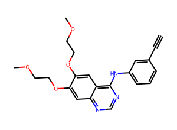

Docking preparation
Prepares files for Vina or GNINA. Does not run docking. Every change is logged.
3D: protein, ligand, search box and site residues (PDB 1M17 chain A; experimental coordinates from the PDB entry).

2D ligand (erlotinib, from the PDB entry).
3. Binding site
| Use | Source | Site | Score |
|---|
Box center (A)Box size (A)
Site confidence: highlighted residues are shown beside the site. No site-confidence value has been computed.
Change log (downloaded with the files):
Download
Download: ligands (PDBQT or SDF), protein (PDBQT), box parameters, change log